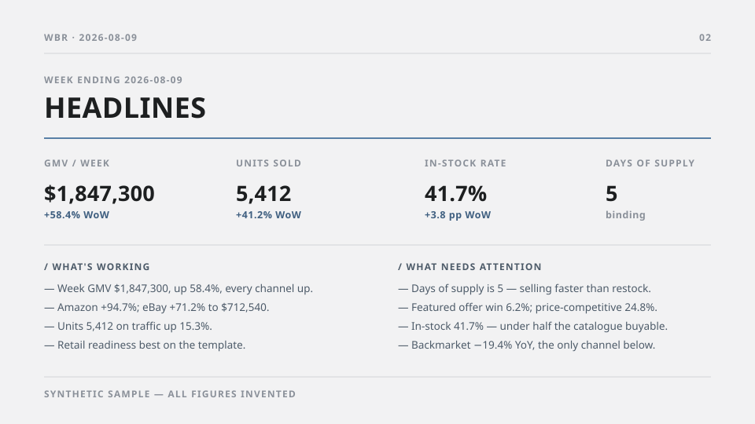

A packaged automation that assembles an exec-ready weekly deck for a marketplace account from five separate systems. The engineering was the easy half; the hard half was making every number on it survive being questioned in the room.

A growth and sales team ran a weekly business review for each of its marketplace accounts. Every week, for every account, someone rebuilt the same deck by hand: sales and inventory metrics out of a warehouse-backed worksheet, work-in-flight out of Linear and Asana, customer-facing status out of a shared action-item tracker, ticket volumes out of Zendesk. Each deck took a couple of hours. There were five accounts.
The cost was not really the hours. It was that a deck assembled over two hours on Tuesday described a business as it stood on Monday, and the questions it raised (why is cover down, who owns that, is it already ticketed) had to be answered by going back to the same five systems by hand.
The obvious framing is “generate the slides automatically.” That framing produces a bad system.
A weekly review is a document people make decisions against, out loud, with the account owner in the room. Its value is entirely in whether the numbers hold up when someone pushes on one. And an automated deck is more dangerous than a hand-built one, because a hand-built deck carries the visible fingerprints of a person who checked, while a generated one arrives looking equally confident whether or not the underlying source returned anything.
So the design constraint was not completeness or speed. It was: the deck must never be confidently wrong. Everything below follows from that.
A packaged automation: twelve scripts, one JSON config per account, its own SQL, its own fonts and brand assets, and a written operating procedure the agent follows each run. The pipeline is five stages: refresh the worksheet and wait for all fourteen data objects to land; extract it into a single JSON payload (48 metric rows, a 13-week trend series, freshness stamp); collect work in flight from four systems (Linear and Asana over MCP, Zendesk, and the shared tracker read through the Drive connector); write the narrative against a house style guide; render the deck.
Two structural decisions did most of the work. Adding an account is a config file, not code. The first few were the hard part, and every account since has been an afternoon of writing JSON rather than a branch, which is how one pipeline now carries seventeen account configurations. And the deck is the only deliverable. An earlier version also drafted a summary email; that went out of scope on 2026-08-04, because reading the group archive needed the pipeline’s only domain-admin dependency and the shared tracker already curated the threads that mattered. The email scripts are still in the repo, unwired, with the decision and its reasoning recorded in the skill file, so if the constraint changes the next person finds the path rather than rediscovering it.
The run is better described as a chain of artifacts than as a list of scripts, because knowing which artifact you are looking at determines what a fix even means. The same wrong number is a SQL edit at one stage, a refresh at the next, and a re-render at the third.
Every run builds a dated file that nobody has bookmarked. The gate validates that file, and only on a pass does the run upload the same file over the stable URL. The validated artifact and the shipped artifact cannot diverge, because they are one object. The gate reads the deck’s PDF export rather than its build log, because the build reports success on the failures that only exist at render time: a dropped bullet, an axis collapsed to a bare 0K, a caption wrapped over the row beneath it. On a failure nothing is published and last week’s deck stands, which is recoverable in a way that a wrong deck is not.
The more useful half is what the gate structurally cannot catch, written down beside it rather than left to be rediscovered. It scans rendered text, so it only catches a leak with a name in it. A wrong number is invisible to it, which is how one account’s ticket-count row once quietly reported another account’s tickets.
Four layers validate the run, and none of them trusts a model or an API’s success response. Knowing which layer owns a failure is how you fix it in one attempt instead of three. Knowing the blind spots is how you avoid trusting a green run more than it deserves.
| Layer | Guards | Cannot see |
|---|---|---|
| Freshness | Every connected tab polled to success; extraction fails closed on a stale freshness stamp | A feed that dies by quantity, where rows land on schedule while the units in them collapse. The max date still reads green |
| Grounding | Every figure must appear in the payload; cross-account contamination; framing; at most two figures per bullet; bullet length, not just count | Whether a true sentence is the right sentence. A caveat that inverts the obvious reading still passes |
| Provenance | Every reference, title, owner, status and date must trace to an item actually fetched, or the draft is rejected | An item that was never fetched at all. Scope is set by the query, and the query is config |
| Render | The published-form PDF: dropped content, blank slides, identity, contamination, placeholders, draft badge | Numbers, and any leak that renders without a name attached to it |
The lesson that cost the most. A guard that runs downstream of generation cannot be fixed by the generator. An over-long bullet passed the narrative validator, was silently dropped at render, and failed the quality gate, while the retry loop that could have shortened it was structurally blind to the problem. The fix was to hand the renderer’s own fitting function to the validator, so the thing that decides and the thing that measures share a definition.
The worksheet does not refresh itself. The extractor refuses to run once the snapshot is more than three days old, and the override flag is documented as something you may not use without telling the person receiving the deck that the data is old and why. The most common way a run stops is this check firing, which is the correct most-common failure.
This is the rule I would keep if I could keep only one. When a source returns nothing, the deck says “source not checked” or “returned no rows”, never “no activity.” Those are different claims: one is a fact about the run, the other is a finding about the business, and a pipeline that blurs them will eventually tell an account owner their client was quiet during a week the client was furious.
Every figure traces to the worksheet payload, a corrected velocity value, or a named work item. Blank is reported blank. An unowned ticket renders as Unassigned rather than being attributed to the most likely person, because a plausible guess on a slide becomes a real expectation on a real human being.
The velocity table stored an average daily revenue figure under a column named for an N-day window. Read literally, estimated lost revenue was understated by a factor of 28. The pipeline corrects it, and then states on the slide that it corrected it, cites the source line, and gives the accuracy bound against the core tables (about 2.6%), with the explicit note that this is directional and not reconciliation-grade. A corrected number with a stated error bar is worth more than a clean-looking number of unknown provenance.
The service-account path to the issue tracker had access to one of thirty-eight teams. It did not error. It returned HTTP 200 and a small, entirely plausible subset: 19 issues where the fully-scoped path found 79, and zero of thirty-eight on one project. A permissions failure that looks like an empty week is the single most dangerous failure mode in the whole pipeline, because nothing about the output looks wrong. The run now fetches as the operator, and the skill file explains at length why the convenient path is not permitted.
Issue search matches descriptions as well as titles, and it matches inside words. One short account token was a substring of the word “account” and pulled 453 issues. Another three-letter token appeared inside an unrelated brand name, inside “severity” and inside “engineering,” returning eighty-odd matches for four real ones.
The obvious fix is to narrow the query to the account’s own project. That fix is wrong, and the measurement says so: one account’s project held nineteen issues and did not contain two that were unambiguously its work. So the broad query stays, and the filtering moves to after the results come back. Every text match is re-checked at a word boundary client-side, because the search API cannot express one, while exact project matches pass through untouched. An over-broad query can be narrowed after the fact; a too-narrow one is silently missing work you will never know to look for.
One tracker is organised by account; the other by function: pricing, listings, triage. Searching the second one for an account name returns almost nothing and invites the conclusion that there is no work in flight. There is plenty. The config carries per-account text queries for exactly this reason, and the procedure says so in the imperative, because the wrong conclusion here is silent.
Seventeen accounts configured; a weekly deck that takes minutes rather than hours; a first-run preflight check so a new operator on a new machine resolves their own access problems before they produce a wrong deck instead of after.
The outcome I actually care about is the least visible one: the people who own the accounts run it themselves. That was the design goal from the start. A pipeline only one person can operate is not automation. It is a bottleneck with better tooling, and it fails the week that person is on vacation. Most of the written procedure exists to make the tool transferable rather than to make it clever.
Note. Client, employer, account identifiers, colleague names, hostnames and schema names have been removed throughout. All figures in the sample deck are synthetic. Dates, technical decisions and reasoning are unchanged.